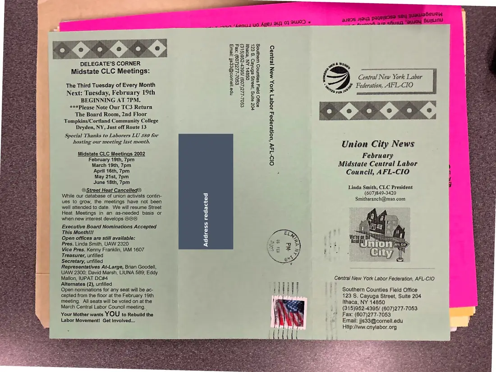
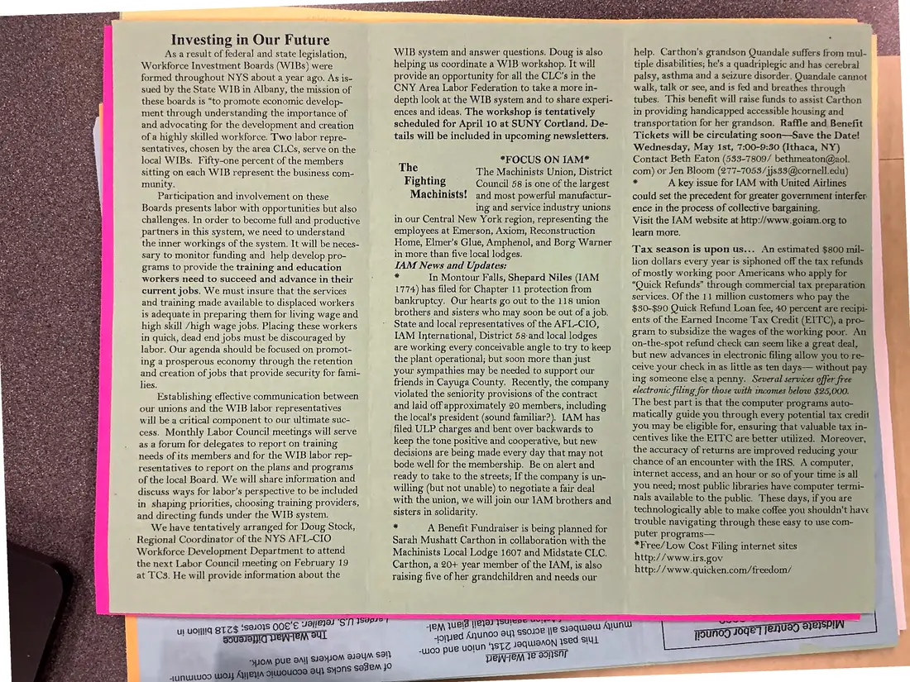
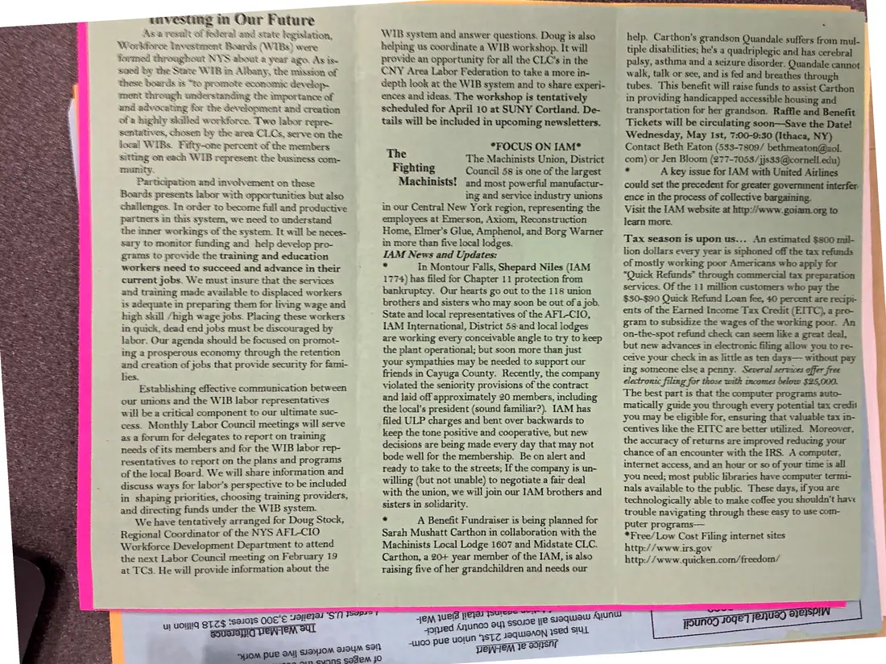

Newsletter, 2 pages, plus 1 additional copy
Union City News, Midstate Central Labor Council, February 2002
February 2002
This issue leads with “Investing in Our Future,” on Workforce Investment Boards and labor's role in them, and includes a “Focus on IAM” profile of the Machinists. Two copies of the inside spread were photographed.
Download or cite this itemPages


(open zoom view)A personal home address has been covered on this page.
Read the page text (machine-read, contains errors)
This text was generated automatically from the photograph and has not been corrected. The image is the authoritative record.
o:- dD ‘DELEGATE’S CORNER Midstate CLC Meetings: The Third Tuesday of Every Month Next: Tuesday, February 19th BEGINNING AT 7PM. ***Please Note Our TC3 Return The Board Room, 2nd Floor Tompkins/Cortland Community College Dryden, NY, Just off Route 13 Special Thanks to Laborers LU 589 for hosting our meeting last month. Midstate CLC Meetings 2002 February 19th, 7pm March 19th, 7pm April 16th, 7pm May 21st, 7pm June 18th, 7pm @Street Heat Cancelled@ While our database of union activists contin- ues to grow, the meetings have not been well attended to date. We will resume Street Heat Meetings in an as-needed basis or when new interest develops @@@ Executive Board Nominations Accepted This Monthif! Open offices are still available: Pres. Linda Smith, UAW 2320 Vice Pres. Kenny Franklin, [AM 1607 Treasurer, unfilled Secretary, unfilled Representatives At-Large, Brian Goodell, UAW 2300; David Marsh, LIUNA 589; Eddy Mallon, IUPAT DC#4 Alternates (2), unfilled Open nominations for any seat will be ac- cepted from the floor at the February 19th meeting. All seats will be voted on at the March Central Labor Council meeting. Your Mother wants YOU to Rebuild the Labor Movement! Get Involved... ew wan ‘hon vo Agel oy 03 GUI) * xe] xe] pee xe) xe) €S02-227(209) :xe4 npeyjewoo@ees! ‘yews eSoz-222(209) is6er-2se(GLe) OS8hL AN ‘BOE P0Z ayINg ‘Jeang BENKeD ‘*s EZ SIWO platy SenUNOD WeuNoS “Tl (37) Qa. (97) queuebeuen s 19uy pasejesse sey : pe —_— feo 310 ehuiin. *Stusoy Huys4 - Py & Oty, j. Central New York Labor % ve Federation, AFL-CIO pee Union City News February Midstate Central Labor Council, AFL-CIO Linda Smith, CLC President (607)849-3420 Smithsranch@msn.com Central New York Labor Federation, AFL-CIO Southern Counties Field Office 123 S. Cayuga Street, Suite 204 ' Ithaca, NY 14650 , (815)952-4395/ (607)277-7053 | © Fax: (607)277-7053 * «Email: jjs33@cornell.edu Http://ww.cnylabor.org


(open zoom view)Read the page text (machine-read, mostly readable)
This text was generated automatically from the photograph and has not been corrected. The image is the authoritative record.
Le en ee re
Investing in Our Future
As a result of federal and state legislation,
Workforce Investment Boards (WI1Bs) were
formed throughout NYS about a year ago. As is-
sued by the State WIB in Albany, the mission of
these boards is “to promote economic develop-
ment through understanding the importance of
and advocating for the development and creation
ofa highly skilled workforce. Two labor repre-
sentatives, chosen by the area CLCs, serve on the
local WIBs. Fifty-one percent of the members
sitting on each WIB represent the business com-
munity.
Participation and involvement on these
Boards presents labor with opportunities but also
challenges. In order to become full and productive
partners in this system, we need to understand
the inner workings of the system. It will be neces-
sary to monitor funding and help develop pro-
grams to provide the training and education
workers need to succeed and advance in their
current jobs. We must insure that the services
and training made available to displaced workers
is adequate in preparing them for living wage and
high skill /high wage jobs. Placing these workers
in quick, dead end jobs must be discouraged by
labor. Our agenda should be focused on promot-
ing a prosperous economy through the retention
and creation of jobs that provide security for fami-
lies.
Establishing effective communication between
our unions and the WIB labor representatives
will be a critical component to our ultimate suc-
cess. Monthly Labor Council meetings will serve
as a forum for delegates to report on training
needs of its members and for the WIB labor rep-
resentatives to report on the plans and programs
of the local Board. We will share information and
discuss ways for labor’s perspective to be included
in shaping priorities, choosing training providers,
and directing funds under the WIB system.
We have tentatively arranged for Doug Stock,
Regional Coordinator of the NYS AFL-CIO
Workforce Development Department to attend
the next Labor Council meeting on February 19
at TCS. He will provide information about the
M DUR BAl| SIBYIOM alam sel} :
oucse au} sMons SeseM 30
WIB system and answer questions. Doug is also
helping us coordinate a WIB workshop. It will
provide an opportunity for all the CLC’s in the
CNY Area Labor Federation to take a more in-
depth look at the WIB system and to share experi-
ences and ideas. The workshop is tentatively
scheduled for April 10 at SUNY Cortland, De-
tails will be included in upcoming newsletters,
*FOCUS ON IAM*
The : The Machinists Union, District
Fighting © = Council 58 is one of the largest
Machinists! and most powerful manufactur-
ing and service industry unions
in our Central New York region, representing the
employees at Emerson, Axiom, Reconstruction
Home, Elmer’s Glue, Amphenol, and Borg Warner
in more than five local lodges.
IAM News and Updates:
- In Montour Falls, Shepard Niles (IAM
1774) has filed for Chapter 11 protection from
bankruptcy. Our hearts go out to the 118 union
brothers and sisters who may soon be out of a job.
State and local representatives of the AFL-CIO,
LAM International, District 58-and local lodges
are working every conceivable angle to try to keep
the plant operational; but soon more than just
your sympathies may be needed to support our
friends in Cayuga County, Recently, the company
violated the seniority provisions of the contract
and laid off approximately 20 members, including
the local’s president (sound familiar?), [AM has
filed ULP charges and bent over backwards to
keep the tone positive and cooperative, but new
decisions are being made every day that may not
bode well for the membership. Be on alert and
ready to take to the streets; If the company is un-
willing (but not unable) to negotiate a fair deal
with the union, we will join our JAM brothers and
sisters in solidarity,
‘a A Benefit Fundraiser is being planned for
Sarah Mushatt Carthon in collaboration with the
Machinists Local Lodge 1607 and Midstate CLC.
Carthon, a 20+ year member of the IAM, is also
raising five of her grandchildren and needs our
TED
eM qwels {ets 1
sored Anunoo eu} $s
woo she uolun ‘STC JOQWIOAON ysed slut
” Tepriem 12 Sonsnr
g010e ye soquisw Aun
help. Carthon’s grandson Quandale suffers from mul-
tiple disabilities; he's a quadriplegic and has cerebral
palsy, asthma and a seizure disorder. Quandale cannot
walk, talk or see, and is fed and breathes through
tubes. This benefit will raise funds to assist Carthon
in providing handicapped accessible housing and
transportation for her grandson. Raffle and Benefit
Tickets will be circulating soon—Save the Date!
Wednesday, May 1st, 7:00-9:30 (Ithaca, NY)
Contact Beth Eaton (533-7809/ bethmeaton@aol.
com) or Jen Bloom (277-7053/}js33@cornell.edu)
* A key issue for [AM with United Airlines
could set the precedent for greater government interfer
ence in the process of collective bargaining.
Visit the [AM website at http://www.goiam.org to
learn more.
Tax season is upon us... An estimated $800 mil-
lion dollars every year is siphoned off the tax refunds
of mostly working poor Americans who apply for
“Quick Refunds” through commercial tax preparation
services. Of the 11 million customers who pay the
$80-$90 Quick Refund Loan fee, 40 percent are recipi
ents of the Earned Income Tax Credit (EITC), a pro-
gram to subsidize the wages of the working poor. An
on-the-spot refund check can seem like a great deal,
but new advances in electronic filing allow you to re- _
ceive your check in as little as ten days— without pay _
ing someone else a penny. Several services offer free
electronic filing for those with incomes below $25,000.
The best part is that the computer programs auto-
matically guide you through every potential tax credit
you may be eligible for, ensuring that valuable tax in-
centives like the EITC are better utilized. Moreover,
the accuracy of returns are improved reducing your
chance of an encounter with the IRS. A computer,
internet access, and an hour or so of your time is all
you need; most public libraries have computer termi-
nals available to the public. These days, if you are
technologically able to make coffee you shouldn't have
trouble navigating through these easy to use com-
puter programs—
*Free/Low Cost Filing internet sites
http://www.irs.gov
http:// www.quicken.com/freedom/
. AISA
jounog 40ge jenuay ernAdditional copies
The same document was photographed more than once. These copies may carry different handwriting, stamps, or paper.


(open zoom view)Read the page text (machine-read, mostly readable)
This text was generated automatically from the photograph and has not been corrected. The image is the authoritative record.
anvesting in Our Future Asa result of federal and state legislation, Workforce Investment Boards (WIBs) were formed throughout NYS about a year ago. As is. sued by the State WIB in Albany, the mission of these boards us “to promote economic develop- ment throagh understanding the importance of and advocating for the development and creation of'a highly skilled workforce. Two labor repre- sentatives, chosen by the area CLs, serve on the local WIBs. Fifty-one percent of the members sitting on cach WIB represent the business com- munity. Participation and involvement on these Boards presents labor with opportunities but also challenges. In order to become full and productive partners in this system, we need to understand the ner workings of the system. It will be neces- sary to monitor funding and help develop pro- grams to provide the training and education workers need to succeed and advance in their current jobs. We must imsure that the services and training made available to displaced workers is adequate in preparing them for living wage and high shall /high wage jobs. Placing these workers in quick, dead end jobs must be discouraged by labor. Our agenda should be focused on promot- ing a prosperous economy through the retention and creation of jobs that provide security for fami- les. Establishing effective communication between our unions and the WIB labor representatives will be a critical component to our ultimate suc- cess. Monthly Labor Council meetings will serve as a forum for delegates to report on traming needs of its members and for the WIB labor rep- resentatives to report on the plans and programs of the local Board. We will share information and discuss ways for labor’s perspective to be included in shaping priorities, choosing training providers, and directing funds under the WIB system. We have tentatively arranged for Doug Stock, Regional Coordinator of the NYS AFL-CIO Workforce Development Department to attend the next Labor Council meeting on February 19 at TCS. He will provide information about the WB system and answer questions. Doug is also helping us coordinate a WIB workshop. It will provide an opportunity for all the CLC’s in the CNY Area Labor Federation to take a more in- depth look at the WIB system and to share experi- ences and ideas, The workshop is tentatively scheduled for April 10 at SUNY Cortland. De- tails will be included in upcoming newsletters. The *FOCUS ON IAM* ge The Machinists Union, District Fighting Council 58 is one of the largest Machinists! and most powerful manufactur- ing and service industry unions in our Central New York region, representing the employees at Emerson, Axiom, Reconstruction Home, Elmer's Glue, Amphenol, and Borg Warner in more than five local lodges. IAM News and Updates: ~ In Montour Falis, Shepard Niles (IAM 1774) has filed for Chapter 11 protection from bankruptcy. Our hearts go out to the 118 union brothers and sisters who may soon be out of a job. State and local representatives of the AFL-CIO, IAM International, District 58-and local lodges are working every conceivable angle to try to keep the plant operational; but soon more than just your sympathies may be needed to support our friends in Cayuga County. Recently, the company violated the seniority provisions of the contract and laid off approximately 20 members, including the local’s president (sound familiar?). [AM has filed ULP charges and bent over backwards to keep the tone positive and cooperative, but new decisions are being made every day that may not bode well for the membership. Be on alert and ready to take to the streets; If the company is un- willing (but not unable) to negotiate a fair deal with the union, we will jom our IAM brothers and sisters in solidarity. 2 A Benefit Fundraiser is being planned for Sarah Mushatt Carthon in collaboration with the Machinists Local Lodge 1607 and Midstate CLC. Carthon, a 20+ year member of the IAM, is also raising five of her grandchildren and needs our tiple disabilities; las Sa quadriplegic and has —— palsy, asthma and a seizure disorder. Quandal help. Carthon’s grandson Quandale suffers from eee walk, tah or sce, and is fel aad eae tubes. This benefit will raise funds to mist arti | = in providing handicapped accessible housing transportation for her grandson. pies mates i Tickets will be circulating soon—Save the Date! — Wednesday, May Ist, 7:00-9:30 (Ithaca, NY) _ Contact Beth Eaton (533-7809/ bethmeaton@aol : com) or Jen Bloom (277-7053/jj * A key issue for [AM with United Auteck could set the precedent for greater government interfer ence in the process of collective bargaining. Visit the [AM website at http://www.goiam_org to — learn more. ' Tax season is upon us... An estimated $300 mil- lion dollars every year is siphoned off the tax refunds of mostly working poor Americans who apply for “Quick Refunds” through commercial tax preparation services. Of the 11 mullion customers who pay the $30-$90 Quick Refund Loan fee, 40 percent are recipi- ents of the Earned Income Tax Credit (EITC), a pro- gram to subsidize the wages of the working poor. An on-the-spot refund check can seem like a great deal, but new advances in electronic filing allow you to re- ceive your check im as little as ten days— without pay ing someone else a penny. Several services offer free electronic filing for those with incomes below $25,000. The best part is that the computer programs auto- matically guide you through every potential tax credit you may be eligible for, ensuring that valuable tax m- centives like the EITC are better utilized. Moreover, the accuracy of returns are improved reducing your chance of an encounter with the IRS. A computer, internet access, and an hour or so of your time is all you need; most public libraries have computer termi- nals available to the public. These days, if you are technologically able to make coffee you shouldn't have trouble navigating through these easy to use com- puter programs— *Free/Low Cost Filing internet sites http://www.irs.gov http://www.quicken.com/freedom/
See something wrong, or recognize a person or event? Send a correction. If you hold rights in this item or think it should not be public, write to the same address.